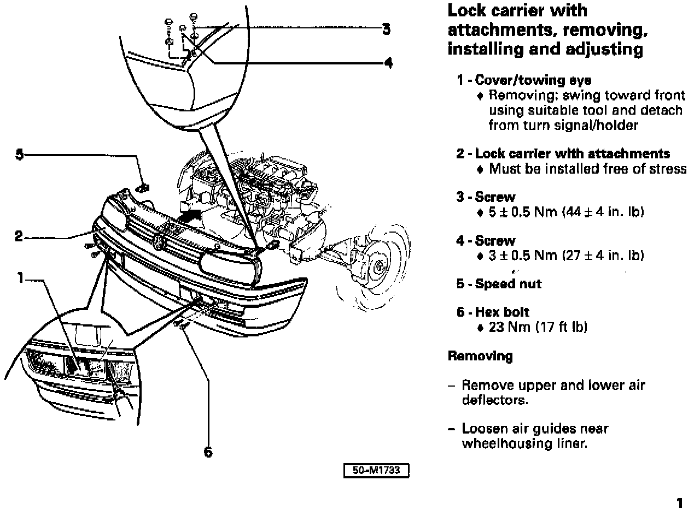

Lock Carrier - Installing and Adjusting
Group: 50Number: 96-03
Date: Oct. 30, 1996
Subject:
Lock Carrier with Attachments,
Removing. Installing and Adjusting
Model(s):
Golf, GTI, Jetta 1993 -->
File this Technical Bulletin in Repair Manual No: W42 011 294 114A
The Repair Manual pages have been revised and will be integrated with the next Repair Manual update.


These pages replace page 50-1 in the current version Repair Manual, Body-Exterior, Body-Interior (W42 011 294 114A).